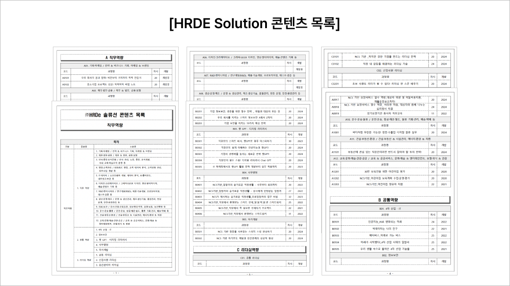
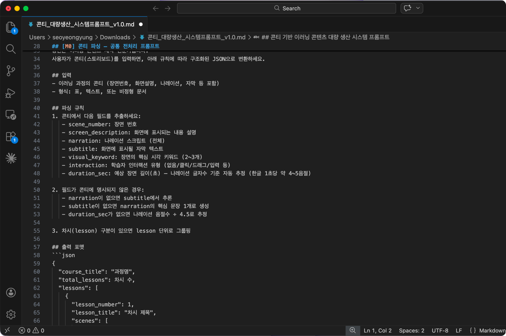
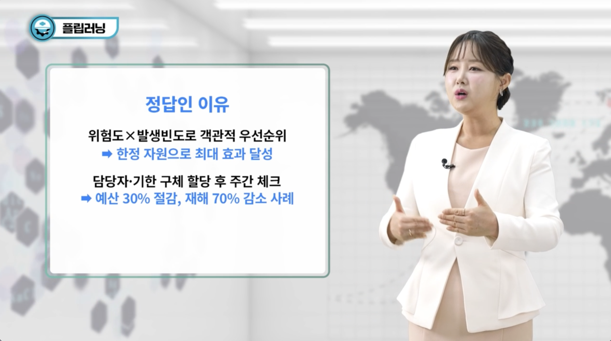
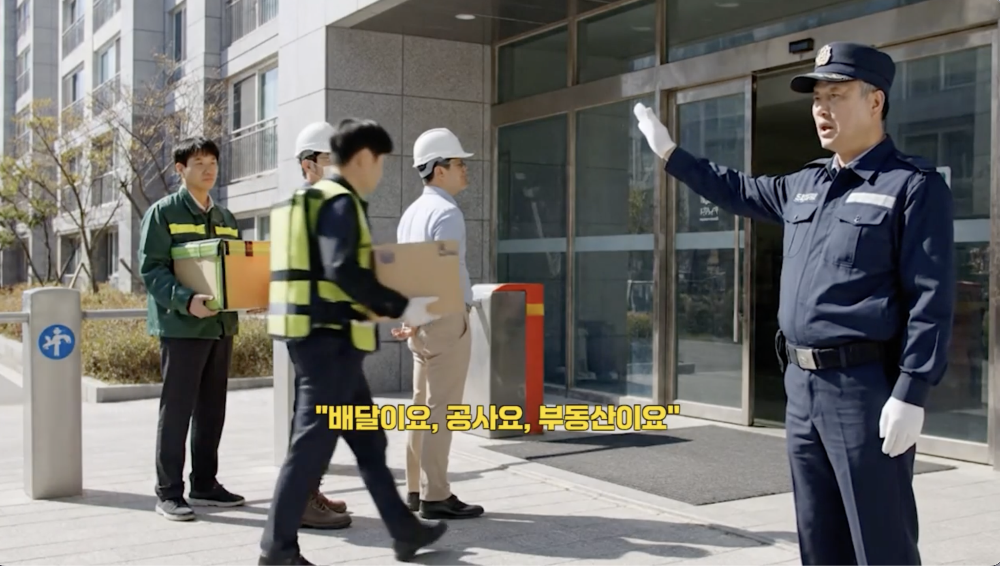

Outcome
수작업 병목이, 반복 가능한 파이프라인으로.
하루 생산량
이미지·영상 사례 대량 생산 가능
자막 PNG 자동 생성
대본 기반 자동 변환
영상 생성 속도
수작업 대비 눈에 띄는 속도 개선
콘텐츠팀은 이미지·영상 사례를 하루 평균 120개씩 만들어내야 했다. 한 장 한 장 수작업으로 제작하던 기존 방식은 이 속도를 따라갈 수 없었다.
문제는 퀄리티가 아니라 속도였다 — 대량 생산이 가능한 워크플로우 자체가 필요했다.

콘텐츠 하나하나의 완성도를 유지하면서도, 사람이 반복 작업에 매달리지 않는 방식이 필요했다. 자동화할 수 있는 구간과 사람이 판단해야 하는 구간을 나누는 게 핵심이었다.
영상마다 자막을 손으로 얹는 작업이 전체 제작 시간의 상당 부분을 차지하고 있었다.
대본 작성부터 자막 제작까지, 반복되는 패턴이 있는 작업일수록 자동화 여지가 크다는 걸 확인했다.
Claude에 프롬프트를 입력해 영상 대본을 생성하고, 그 대본을 기반으로 73장의 자막 PNG 파일을 자동으로 만들어내는 파이프라인을 구성했다.

매번 처음부터 만드는 대신, Claude 프롬프트 → 대본 생성 → 자막 PNG 생성 → 영상 제작 툴 투입까지 이어지는 워크플로우를 한 번 설계해두고 반복 재사용했다.
이 프로젝트에서 가장 크게 바뀐 건 작업 단위였다. 화면 하나하나를 디자인하는 대신, "무엇을 자동화하고 무엇을 사람이 검수할지"를 설계하는 게 핵심 작업이 됐다.
AI가 생성한 결과물을 그대로 쓰지 않고, 매 단계마다 사람의 눈으로 확인하는 지점을 남겨둔 것이 대량 생산 속에서도 퀄리티를 지킬 수 있었던 이유였다.
프롬프트 하나로 대본부터 자막까지 이어지는 워크플로우 덕분에, 콘텐츠팀은 이제 반복 작업이 아니라 기획과 검수에 시간을 쓸 수 있게 됐다.

